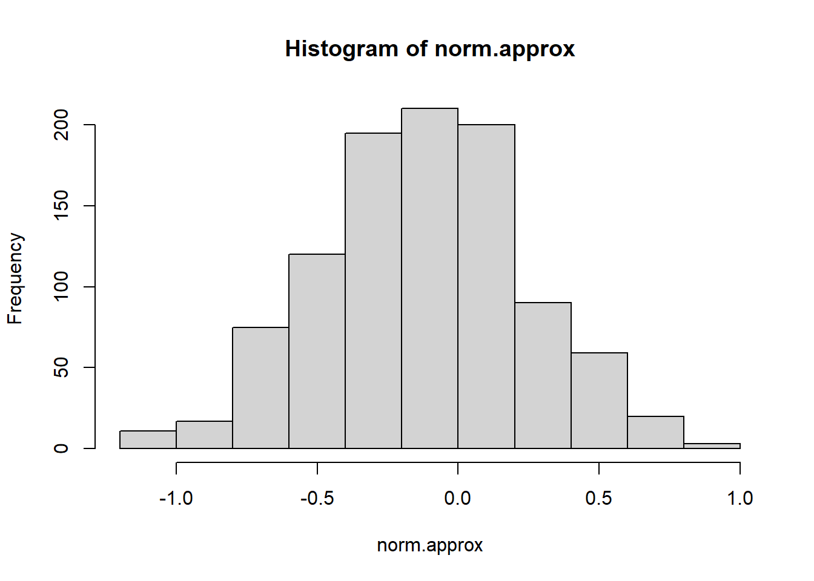
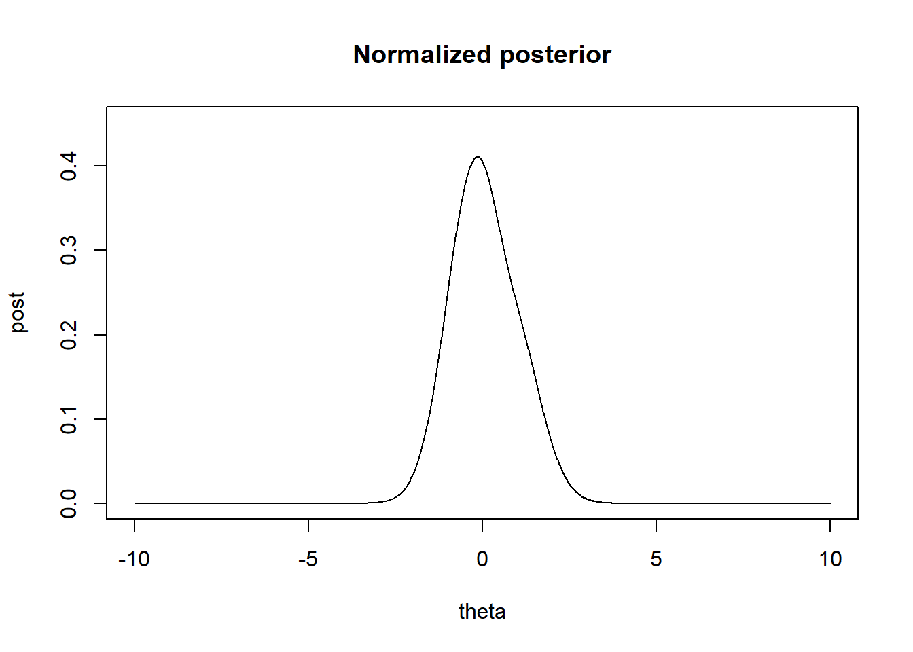
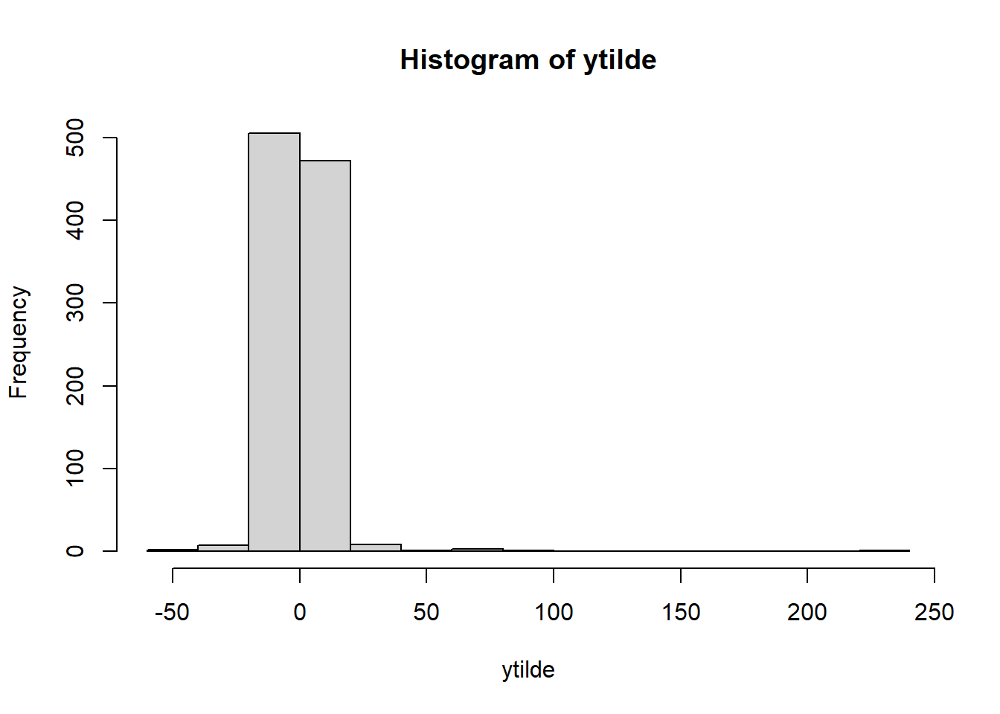

Chapter 4 Asymptotics and connections to non-Bayesian approaches
4.1 Normal approximations to the posterior distribution
If the posterior distribution is unimodal and roughly symmetric, it can be approximated by a normal distribution, such that the logarithm of the posterior density is approximated by a quadratic function via the Taylor series expansion of \(\theta\).
Consider a quadratic approximation to the log-posterior centered on the posterior mode. where the linear term goes to 0.
\[\begin{equation} log p(\theta|y) = log p(\hat{\theta|y}) + (1/2)(\theta-\hat{\theta)})^T[ d^2/d\theta^2 log p(\theta|y)]_{\theta=\hat{\theta}}+... \tag{4.1} \end{equation}\]
The first term is a constant and the second term is proportional to the normal density yielding the approximation and we can expand the posterior density second derivative in terms of the prior and likelihood.
\[\begin{equation} [d^2/d\theta^2 log p(\theta|y)]_{\theta=\hat{\theta}} =[d^2/d\theta^2log p(\theta)]_{\theta=\hat{\theta}}+\sum_{i=1}^n[d^2/d\theta^2log p(y_i|\theta)]_{\theta=\hat{\theta}} \end{equation}\]
Now to show the normal approximation
\[ \begin{aligned} log p(\theta|y) &= log p(\hat{\theta|y}) + (1/2)(\theta-\hat{\theta)})^T[ d^2/d\theta^2 log p(\theta|y)]_{\theta=\hat{\theta}}+... \\ &= log p(\hat{\theta|y}) + (1/2)(\theta-\hat{\theta)})^T ( d^2/d\theta^2 log p(\hat{\theta}) + \sum_{i=1}^n d^2/d\theta^2 log p(y_i | \theta)_{\theta=\hat{\theta}} ) \\ log p(\theta|y) - log p(\hat{\theta|y}) &= + (1/2)(\theta-\hat{\theta)})^T (c -n* J(\theta_0)) \\ p(\theta|y ) - p(\hat{\theta}|y) &\propto exp( -\frac{1}{2(nJ(\theta_0))^{-1}}(\theta-\hat{\theta})^T) \end{aligned} \] Which taking the limit as \(|\theta -\hat{\theta}| \to 0\), then the posterior converges to 0 written as \(p(\theta|y )- p(\hat{\theta}|y) \to 0\) as \(n \to \infty\), and we have normality.
In discussing large-sample periorties, the concept of Fisher Information , \(J(\theta)\), in the context of Jeffreys’ prior is used.
\[\begin{equation} p(\theta|y) \approx N(\hat{\theta}, [I(\hat{\theta})]^{-1}) \tag{4.2} \end{equation}\]
Where I(\(\theta)\) is the observed information \[\begin{equation} I(\theta)= -d^2/d\theta^2 log p(\theta|y) \end{equation}\]
Where is the mode \(\hat{\theta}\) is in the interior of the parameter space, then the information is positive definite.
Summarizing posterior distributions by point estimates and standard errors
From the asymptotic theory, if n is large enough, a posterior distribution is approximated by the normal distribution. A standard inferential summary is the 95\(\%\) interval obtained by computing a point estimate \(\hat{\theta}\) such as the MLE (which is the posterior under a uniform prior density), plus or minus two standard errors, with the standard error estimated from the information at the estimate \(I(\hat{\theta})\).
4.2 Large-sample theory
The basic tool of Bayesian inference is asymptotic normality of the posterior distribution, as more data arrive from the same underlying process, the posterior distribution of the parameter vector approaches multivariate normality. Suppose the data are modeled by a parametric family, \(p(y|\theta)\), and a prior p\((\theta)\), and suppose that the true distribution is included in the parametric family (i.e. if \(f(y) = p(y|\theta_0))\) then the property of asymptotic normality and consistency holds.
Consistency is defined as the posterior distribution converges to a point mass at the true parameter, \(\theta_0\) as n\(\to \infty\).
Note, that if the true distribution is not included in the parametric family, then there is no longer a true parameter to converge to. One must use the Kullback-Leibler divergence to determine the value \(\theta_0\) that makes the model distribution closest to the true distribution.
Asymptotic normality and consistency
Under regularity conditions ( the likelihood is a continuous function of \(\theta\), and that \(\theta_0\) is not a boundary point), as \(n\to \infty\), the posterior distribution of \(\theta\) approaches normality with mean \(\theta_0\) and variance (\(nJ(\theta_0))^{-1}. Where J(\))$ is the FIsher information in context fo Jeffreys’ Prior.
The posterior mode is consistent for \(\theta_0\), as \(n\to \infty\), so the mass of the posterior \(p(\theta|y)\) becomes concentrated in small neighborhoods of \(\theta_0\) and the distance of \(|\theta-\theta_0|\to 0\).
Further, we can write the coefficient of the quadratic term in (4.1). \[\begin{equation} [d^2/d\theta^2 log p(\theta|y)]_{\theta=\hat{\theta}} =[d^2/d\theta^2log p(\theta)]_{\theta=\hat{\theta}}+\sum_{i=1}^n[d^2/d\theta^2log p(y_i|\theta)]_{\theta=\hat{\theta}} \end{equation}\]
This is considered a function of \(\theta\), as a constant term plus the sum of n terms whose expected value under the true sampling distribution \(p(y_i|\theta_0\))., is approximately \(-J(\theta_0)\), assuming \(\hat{\theta}\) is close to \(\theta\).
In summary, as the limit of n, in the context of a family of models posterior mode, \(\hat{\theta}\), approaches the truth \(\theta_0\), and the curvature approaches \(nJ(\hat{\theta})\) or nJ(\(\theta_0\)). Interesting, as \(n\to\infty\) the prior term is a constant, and the likelihood dominates the posterior because the likelihood alone is used to obtain the mode and curvature for the normal approximation.
4.3 Frequency evaluations of Bayesian inferences
The notion of stable estimation which says that for a fixed model, the posterior approaches a point as more data arrive, leading , in the limit, to inferential certainty, is based on the concepts of repeated sampling. It is certainly appealing that if the hypothesized family of probability models contain the true distribution, then as more information about \(\theta\) arrives, the posterior distribution converges to the true value of \(\theta\).
Large sample correspondence
Suppose that the normal approximation holds (4.2) for the posterior distribution for \(\theta\), then we can transform to the standard normal multivariate normal
\[\begin{equation} [I(\hat{\theta})]^{1/2}(\theta-\hat{\theta}) |y \sim N(0,I) \tag{4.3} \end{equation}\]
Where \(\hat{\theta}\) is the posterior mode and \([I(\hat{\theta})]^{1/2}\) is any matrix square root of the observed fisher information. In addition to \(\hat{\theta}\to \theta_0\) we can write the approximation using I(\(\theta_0\)). If the true data distribution is included in the class of models, so that \(f(y)= p(y|\theta)\), then under repeated sampling with fixed \(\theta\), as \(n \to \infty\) then
\[\begin{equation} [I(\hat{\theta})]^{1/2}(\theta-\hat{\theta}) |\theta \sim N(0,I) \tag{4.4} \end{equation}\]
This is generally proven for the MLE, but can be extended for the posterior mode \(\hat{\theta}\). This results suggest that for any function (\(\theta-\hat{\theta})\) the posterior distribution derived from (4.3) is asymptotically the same as the repeated sampling distribution from (4.4). Thus for a \(95\%\) central posterior interval for \(\theta\) will cover the true value 95\(\%\) of the time under repeated sampling with any fixed true \(\theta.\)
Point estimation, consistency, and efficiency
For large samples, obtaining an estimate- makes most sense when the posterior mode \(\hat{\theta}\) is the obvious center and the \(nI(\theta_0\)) is small and practically unimportant. However in smaller samples, one can define optimal point estimates, but it is better to show the full representation of the full posterior distribution. In most problems, the point estimate and the standard error are adequate to summarize the posterior inference. We interpret the estimate as an inferential summary, not as a decision solution / classification.
A point estimate is said to be consistent as the samples get larger, it converges to the true value parameter. Thus if \(f(y)=p(y|\theta_0)\), then a point estimate \(\hat{\theta}\) of \(\theta\) is consistent if its sampling distribution converges to a point mass at \(\theta_0\) for \(n\to \infty\).
Asymptotic unbiasedness is defined as \((E(\hat{\theta}|\theta_0 - \theta_0))/sd(\hat{\theta}|\theta_0)\) converges to 0 as sample size increases.
Efficiency for a point estimate is if there is no other function of y that estimates \(\theta\) with lower mean squared error, that is if the expression E((\(\hat{\theta}-\theta_0)^2|\theta_0)\) is at its optiomal lowest value. An estimate is asymptotically efficient if its efficiency approaches 1 as the sample size n, increases to infinity.
Confidence coverage
If a region C(y) includes \(\theta_0\) at least 100(\(1-\alpha)\%\) of the time, then C(y) is called the 100(\(1-\alpha)\%\) confidence region for parameter \(\theta\). We saw previously that asymptotically a 100(\(1-\alpha)\%\) central posterior interval for \(\theta\) has the property that , in repeated samples of y, 100(\(1-\alpha)\%\) of the intervals include \(\theta_0\).
4.4 Exercises
Question 1
- a using simple calculus we found l’ = \(\frac{2*\sum_{i=1}^5(y_i-\theta)}{1+(y_i-\theta)^2}\) and l’’ = \(\frac{-2\sum_{i=1}^5((y_i-\theta)^2-1)}{(1+(y_i-\theta)^2)^2}\)
mleCauchy<-function(x,tolerance=0.001){
startvalue<-median(x)
n=length(x)
theta_current<-startvalue
first_deriv<- 2*sum((x-theta_current)/(1+(x-theta_current)^2))
while( abs(first_deriv)>tolerance){
second_deriv<- 2*sum(((x-theta_current)^2-1)/(1+(x-theta_current)^2)^2)
theta_new<- theta_current - first_deriv/second_deriv
theta_current<-theta_new
first_deriv<- 2*sum((x-theta_current)/(1+(x-theta_current)^2))
}
return(theta_current)
}
x<-c(-1.94,0.59,-5.98,-0.08,-0.77)
mleCauchy(x,0.0001)## [1] -0.5343968- b the MLE for theta is -0.138. Using newton-raphson method for \(\theta^{1} = \theta^0 - l'(\theta^0)/l''(\theta^0)\)
x<-c(-2,-1,0,1.5,2.5)
posterior_mode<-mleCauchy(x,0.0001)
print(posterior_mode)## [1] -0.1376488 ## optimize function
optimize(function(theta) -sum(dcauchy(x, location=theta, log=TRUE)), c(-100,100)) ## $minimum
## [1] -0.1376593
##
## $objective
## [1] 11.17292-c for the normal approximation we use \(p(\hat{\theta}|y)\approx N(\hat{\theta}, nI(\theta_0)^-1)\) \[ \begin{aligned} I(\theta) &= E(d/d\theta log p(\theta|y))^2 \\ E[ (\frac{2(y-\theta)}{1+(y-\theta)^2})^2] &= \int_{-\infty}^{\infty}(\frac{2(y-\theta)}{1+(y-\theta)^2})^2 \frac{1}{1+(y-\theta)^2}d\theta\\ &= 8 \int_{0}^{\infty} \frac{u^2}{(1+u^2)^2}du, u= y-\theta, du = -d\theta\\ & \text{2nd substitution } x=\frac{1}{1+u^2} \implies u^2=\frac{1}{x}-1 , du=(1/2)(1/x-1)^{-1/2}(-1/x^2)dx\\ & = -4 \int (1-x)x^2 [1/2 (\frac{1}{x}-1)^{-1/2}(-1/x^2) dx] \\ &2 \int_0^\infty (1-x) (1/x -1)^{-1/2} dx \\ & 2 \int_0^\infty x^{1/2}(1-x)^{1/2} \sim Beta(\alpha=3/2, \beta = 3/2)\\ I(\theta)& = \frac{ 4 \Gamma(3/2)\Gamma(3/2)}{\Gamma(3)} \approx 1.5708 \end{aligned} \] \(p(\theta| y) \approx N(\hat{\theta}, \sigma^2 = 1/(n*I(\theta)))\)
# need to derived the Fisher information for Cauchy
fishers.n<-(4*gamma(3/2)*gamma(3/2)/(gamma(3)))
var.approx<- 1/(length(x)*fishers.n)
norm.approx<-(rnorm(1000,mean=posterior_mode,sd=sqrt(var.approx)))
hist(norm.approx)
compare with 2.11 grid approach using the Cauchy distribution, we see that normal approximation has much wider tails compared to the exact distribution, this is because of the small sample size.
y<-x<-c(-2,-1,0,1.5,2.5)
step=0.01
#theta<-seq(from=0,to=100000)/m
theta<-seq(-10, 10,by=step)
## p(theta | y) ~ p(y|theta)*p(theta)
dens<-function(y,th){
dens0<-NULL
for(i in 1:length(th)){
dens0<-c(dens0, prod (dcauchy(y, th[i],1)))
}
dens0
}
#dens(y,theta)
# L(theta | y) = prod_{i=1}^n f(y| theta) we need the product term here.
unnorm.post<-sapply(theta, function(x) prod(dcauchy(y,location=x,scale=1) )) ## un norm post
## p(theta| y ) = p(y| theta)p(theta) where p(theta) is U(0,100)
post<-unnorm.post/(step*sum(unnorm.post))
plot(theta,post,type='l',main='Normalized posterior', ylim=c(0, 1.1*max(post)))
samps<-(sample(theta,1000,prob=post*step,replace=T))
ytilde<-rcauchy(1000,location=samps,scale=1)
hist(ytilde)